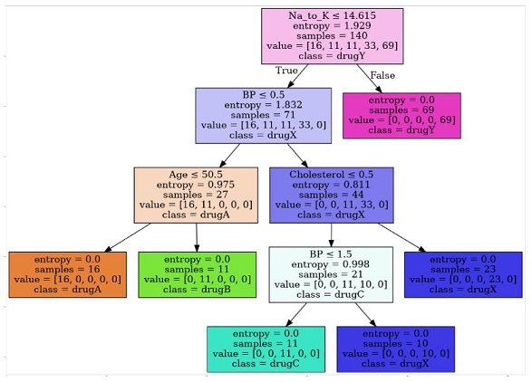

Machine Learning - Predicting the best drug for an unknown patient with Decision Trees.
Overview
In this notebook, we will use Decision Trees to build a model from historical data of patients, and their response to different medications. Then we will use the trained decision tree to find out which drug might be appropriate for a future patient with the same illness: